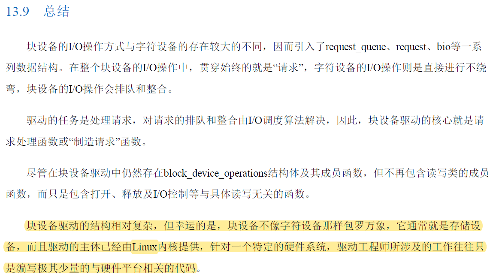
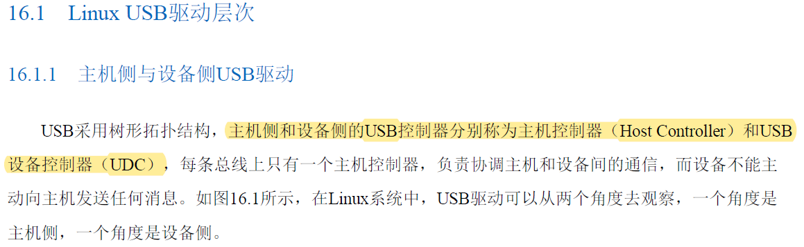

1. 设备和模块分类
1.1 驱动分类
-
字符设备：可以当做一个字节流来存取设备，一个字符驱动负责实现这种行为。驱动常常至少实现open，close，read，write系统调用。一个字符设备和普通文件区别：普通文件可以移来移去，但是大部分字符设备仅仅是数据通道，只能顺序存取。
-
块设备：通过/dev目录的文件系统节点来存取。
-
网络接口
7 Linux设备驱动中的并发控制
7.1 信号量和互斥锁的区别
信号量和自旋锁是两种不同的同步机制，用于保护共享资源不被多个并发线程或进程同时访问。它们在实现并发控制时的主要区别如下：
- 睡眠与非睡眠
- 信号量：当一个线程试图获取已被占用的信号量时，如果该信号量的值小于0，则线程会被挂起（即“睡眠”），并放入等待队列中，直到其他线程释放信号量从而唤醒它。
- 自旋锁：持有自旋锁的线程不会睡眠，而是在无法获取锁时进入循环等待状态（称为“自旋”），持续不断地检查锁是否可用。这意味着持有自旋锁的线程会消耗CPU时间，而不是被调度器挂起。
- 上下文切换
- 信号量：可能导致上下文切换，因为线程在等待信号量时可能需要切换到其他可运行的线程。
- 自旋锁：由于不涉及线程睡眠和唤醒，所以一般不会发生上下文切换，但在持有锁期间可能会阻止其他处理器核心上的任务进行有效执行。
- 使用场景
- 信号量：适用于临界区代码执行时间较长的情况，或者在用户空间和内核空间之间同步时，适合于任何可以等待的上下文，包括进程上下文。
- 自旋锁：适用于临界区代码执行非常快且预期锁定时间极短的情况，通常只在内核空间内部使用，特别是中断处理程序、高速缓存一致性操作等场合，因为在这些情况下，上下文切换的开销远大于快速获取锁的成本。
- 性能和资源消耗
- 信号量：当临界区中的操作确实需要较长时间时，信号量通过让出CPU给其他任务提高了整体系统效率，但增加了上下文切换的开销。
- 自旋锁：对于锁保护区域执行时间很短的情况，自旋锁能避免上下文切换开销，但如果自旋时间过长，则会导致CPU空转和能耗增加。
- 递归性
- 信号量：有些信号量实现允许递归调用（同一线程可以多次获得同一个信号量）。
- 自旋锁：通常不允许递归持有，即一旦一个线程获取了自旋锁，就不能再次获取它，否则会导致死锁。
- 多持有者
- 信号量：可以有任意数量的锁持有者，取决于其设计类型（如二进制信号量只能有一个持有者，而计数信号量可以允许多个）。
- 自旋锁：在同一时刻最多只能有一个任务持有自旋锁。
总结起来，选择使用信号量还是自旋锁主要依赖于预期的临界区执行时间和上下文的要求。如果临界区执行时间不确定或可能较长，以及上下文可能是可以睡眠的，应优先考虑使用信号量；如果临界区执行时间短且必须在不能睡眠的上下文中执行，比如中断服务例程中，则应采用自旋锁。
7.2 信号量和互斥体区别
信号量和互斥体（Mutex，也称为互斥锁）都是用于同步线程访问共享资源的机制，但它们在功能和使用上有明显的区别：
- 互斥体（Mutex）：
- 基本特征：互斥体是一种二进制信号量（值只能为0或1），它提供了一种排他性的锁机制。
- 作用：主要用于实现对共享资源的互斥访问，确保任何时刻只有一个线程能够进入临界区（即执行保护的代码段）。
- 加锁与解锁：一个线程获取互斥锁后，其他试图获取该锁的线程将被阻塞，直到拥有锁的线程释放该锁。
- 适用场景：当需要确保数据完整性、避免竞态条件时，比如在单个全局变量或者复杂的多步骤操作中防止多个线程同时修改。
- 信号量（Semaphore）：
- 基本特征：信号量可以有任意非负整数值，而不局限于0和1。
- 作用：不仅可以用来实现互斥，还可以控制同时访问某一资源的线程数量。例如，如果信号量的值表示可用资源的数量，则每次P（wait）操作会减少信号量的值，当值为0时阻止更多的线程；V（signal）操作则增加信号量的值，可能唤醒等待的线程。
- 同步机制：信号量可用于实现更复杂的同步模式，如生产者-消费者问题中的缓冲区满空控制，或者限制并发执行的任务数等。
- 适用场景：当需要控制资源池大小、管理有限资源或多路同步时。
总结来说，互斥体用于保证一次只有一个线程访问资源，而信号量提供了更灵活的并发控制手段，允许一定数量的线程同时访问资源。
第二条没看懂？？


MCU是Microcontroller Unit（微控制器）的缩写，也称为单片机或微控制单元。它是一种将中央处理器（CPU）、随机存取存储器（RAM）、只读存储器（ROM）、输入/输出（I/O）接口、定时器/计数器、模数转换器（ADC）、数模转换器（DAC）、串行通信接口（如UART、SPI、I²C等）以及其他外围设备集成在一块芯片上的计算机系统。
MCU的设计目标是为了实现对特定应用系统的控制功能，并且具有体积小、功耗低、成本经济、易于嵌入到各种产品中的特点。MCU广泛应用于各类电子设备和工业控制系统中，例如家用电器、汽车电子、智能仪器仪表、消费类电子产品、医疗设备、安防系统以及工业自动化等领域，作为控制核心部件来执行数据处理、信号采集、实时控制等任务。


vmalloc是Linux内核中的一种内存分配机制，用于在虚拟地址空间中分配连续的大块内存区域，不同于物理内存页直接映射到虚拟地址空间的kmalloc函数。vmalloc主要用于那些需要大量连续虚拟地址空间，但对物理内存不需要连续的需求场景。
以下是vmalloc的主要特点和用途：
- 大内存分配：当需要分配大于物理内存页面大小的连续地址空间时（比如分配一个大型设备驱动的数据缓冲区），vmalloc可以跨越多个不连续的物理页，并通过页表将这些物理页映射到连续的虚拟地址区间。
- 虚拟地址连续：vmalloc保证返回的是虚拟地址空间中的连续区域，这有助于一些硬件接口或协议要求连续地址的应用场景。
- 非物理连续：尽管虚拟地址连续，对应的物理内存页则可能是分散的，这样有助于更有效地利用物理内存碎片。
- 跨NUMA节点：由于vmalloc分配的虚拟地址与物理地址解耦，因此可以在不同NUMA节点上的物理内存之间分配，适应复杂的多处理器系统。
- 性能开销：vmalloc相比于kmalloc有更高的间接寻址开销，因为访问vmalloc分配的内存通常涉及额外的TLB（Translation Lookaside Buffer） miss以及页表查找。
- 安全性增强：vmalloc提供的地址空间与其他内核空间或用户空间地址相隔离，有利于提高系统的安全性和稳定性。
- 使用场景：适用于大规模数据结构、设备驱动的缓冲区分配、或者与物理地址无关的场合，如映射I/O资源等。
在实现上，vmalloc通过维护独立于物理内存管理结构的vm_struct链表来记录虚拟内存区域的信息，并配合页表进行映射。由于涉及到页表的操作，所以vmalloc操作往往比kmalloc更加复杂且昂贵，但对于需要大量连续虚拟地址的情况来说是必需的


流式DMA（Direct Memory Access）映射和普通DMA映射都是Linux内核中用于管理内存与外部设备之间直接数据传输的机制。这里的“普通”或“一致性”DMA映射通常指的是通过dma_alloc_coherent()等函数实现的一致性DMA映射，而“流式”DMA映射则指通过dma_map_single()、dma_map_page()等函数进行的临时或单次数据传输时的DMA映射。
一致性DMA映射：
- 适用于长时间存在的内存区域，比如驱动程序为硬件分配的连续缓冲区。
- 内存区域在物理地址空间上是连续的，并且保证了CPU缓存和DMA操作之间的数据一致性，即CPU和DMA控制器对同一块内存区域访问时不需要额外的手动同步。
dma_alloc_coherent()不仅分配内存，还会确保该内存符合DMA的要求，包括硬件一致性需求以及可能的特定地址约束（如在某些平台上需要从特定地址范围开始的内存）。- 当不再需要时，使用
dma_free_coherent()来释放内存和相关的DMA映射。
流式DMA映射：
- 适用于临时或者一次性数据传输，可以是对单个连续内存区域或页面的映射。
- 不像一致性DMA映射那样预先分配并保持一致性的内存区域，流式映射是在实际DMA传输前动态创建的，并且可以在完成传输后立即解除映射。
dma_map_single()将用户空间或内核空间的一个已经存在的内存区域映射到DMA可访问的物理地址空间。- 在传输完成后，必须调用
dma_unmap_single()或dma_unmap_page()来取消映射，并告知系统 DMA 操作已完成，以便系统处理潜在的 cache 同步问题。 - 对于小批量或非频繁的数据传输来说，流式映射提供了一种更灵活的方式，因为它不需要为每次传输预先分配固定大小的连续内存。
总结来说，一致性DMA映射主要面向长期存在的、需保持数据一致性的专用内存区域；而流式DMA映射则更适合于临时和灵活的内存映射场景，特别是当涉及非连续的内存页或者不需要保持一致性的数据传输时。


I2C（Inter-Integrated Circuit）是一种串行通信总线标准，由飞利浦半导体（现恩智浦半导体）在1980年代初期开发。I2C总线用于连接微控制器和各种外围设备，如传感器、存储器、LCD驱动器等，在同一电路板上实现芯片间的低速数据传输。
I2C总线的特点包括：
-
两线式：仅使用两条线路进行通信，即数据线SDA（Serial Data Line）和时钟线SCL（Serial Clock Line）。
-
多主从结构：支持多个主设备和多个从设备，但在任何时刻只有一个主设备可以控制总线并发起通信。
-
寻址方式：每个连接到总线的设备都有一个唯一的7位或10位地址，使得主设备能够选择与特定从设备通信。
-
同步通信：数据传输是基于时钟信号SCL进行同步的，主设备负责生成时钟信号，所有设备都根据该时钟信号进行数据采样和移位操作。
-
双向通信：数据线SDA上的信息既可发送也可接收，因此支持全双工通信模式，但实际上在同一时间内只有单方向的数据流动（类似半双工）。
-
总线仲裁：如果同时存在多个主设备尝试控制总线，则通过硬件自动进行总线仲裁，确保不会发生数据冲突。
-
开放标准：I2C总线规范对所有制造商开放，并且被广泛应用于众多嵌入式系统中，因其简单性和低成本而备受青睐。
-
速度范围：I2C总线的速度可以根据需要配置，支持标准模式、快速模式、快速加模式以及高速模式等多种速率等级，最高速率可达每秒几兆比特。
I2C总线通常用于短距离、低速率的场合，特别适合于低功耗设备间的小型化设计和通信需求。
